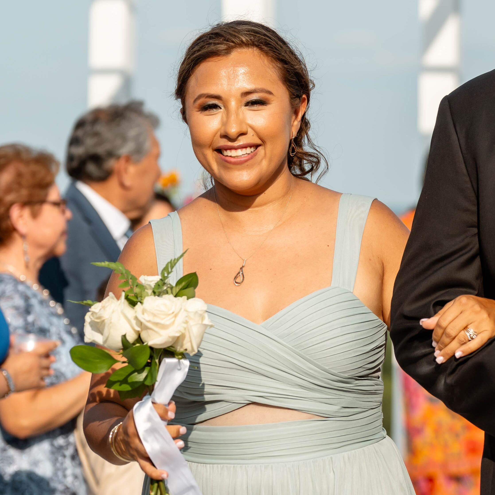
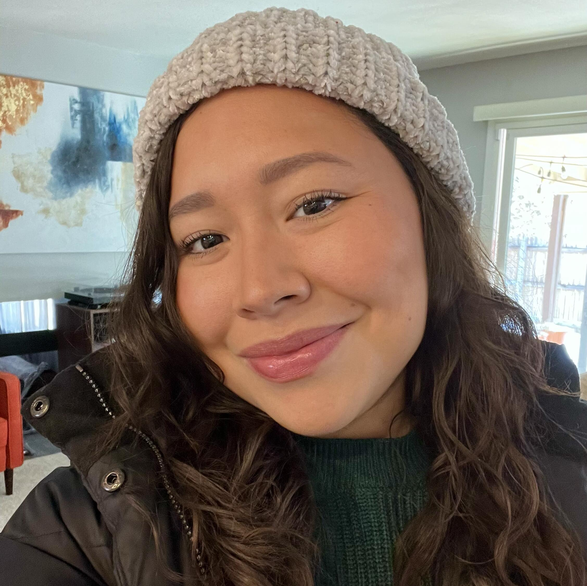
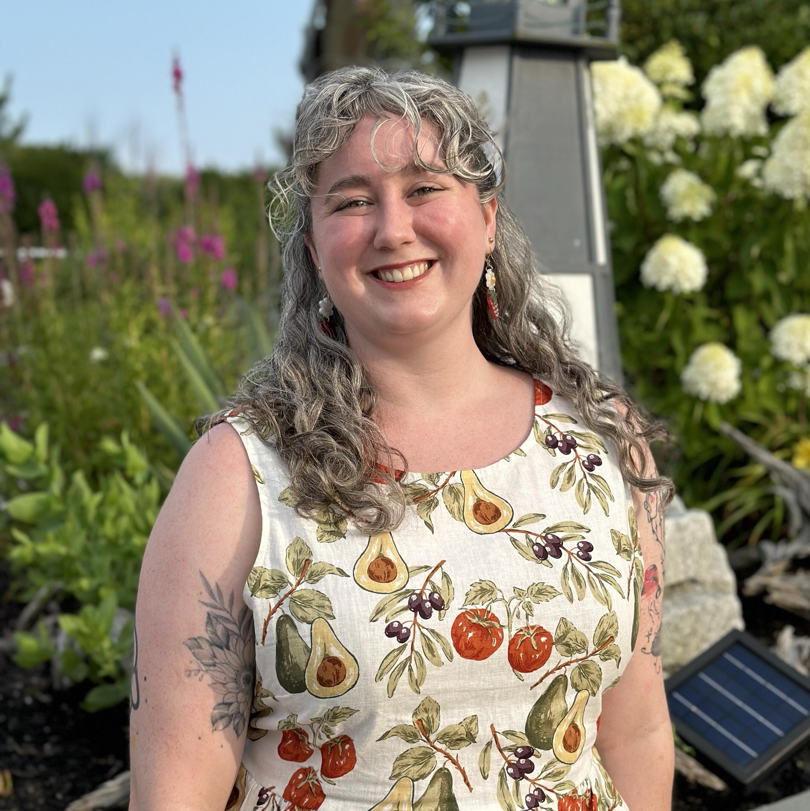
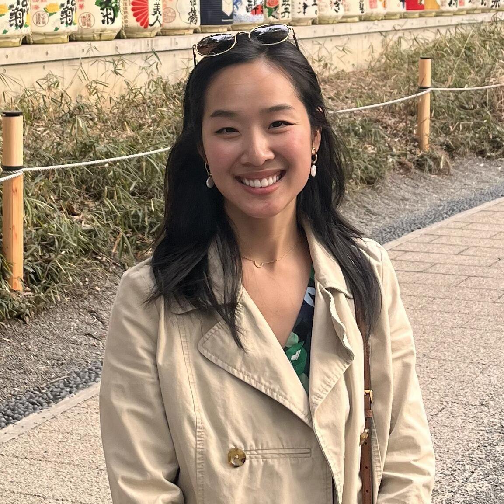
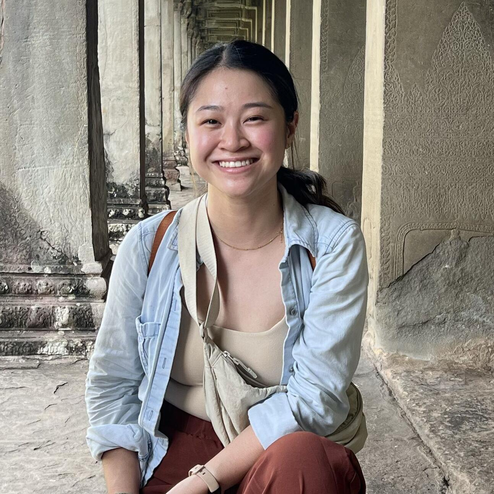
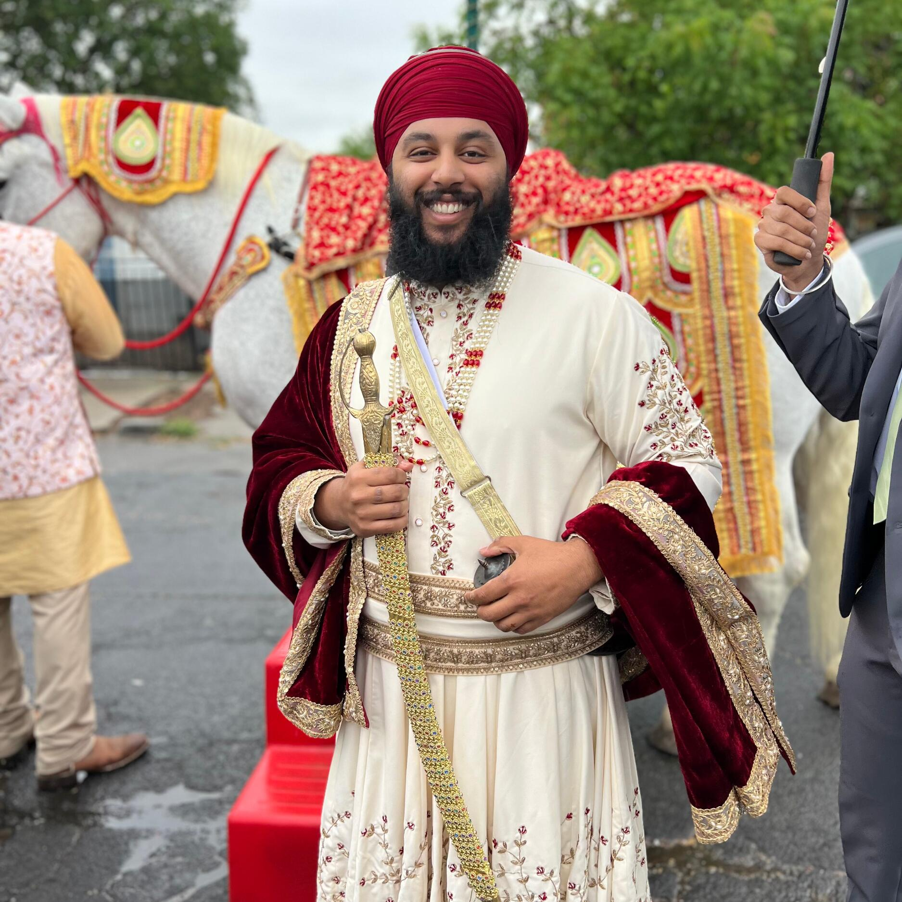
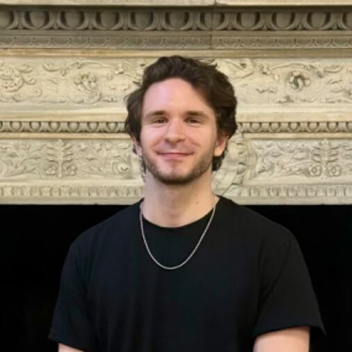
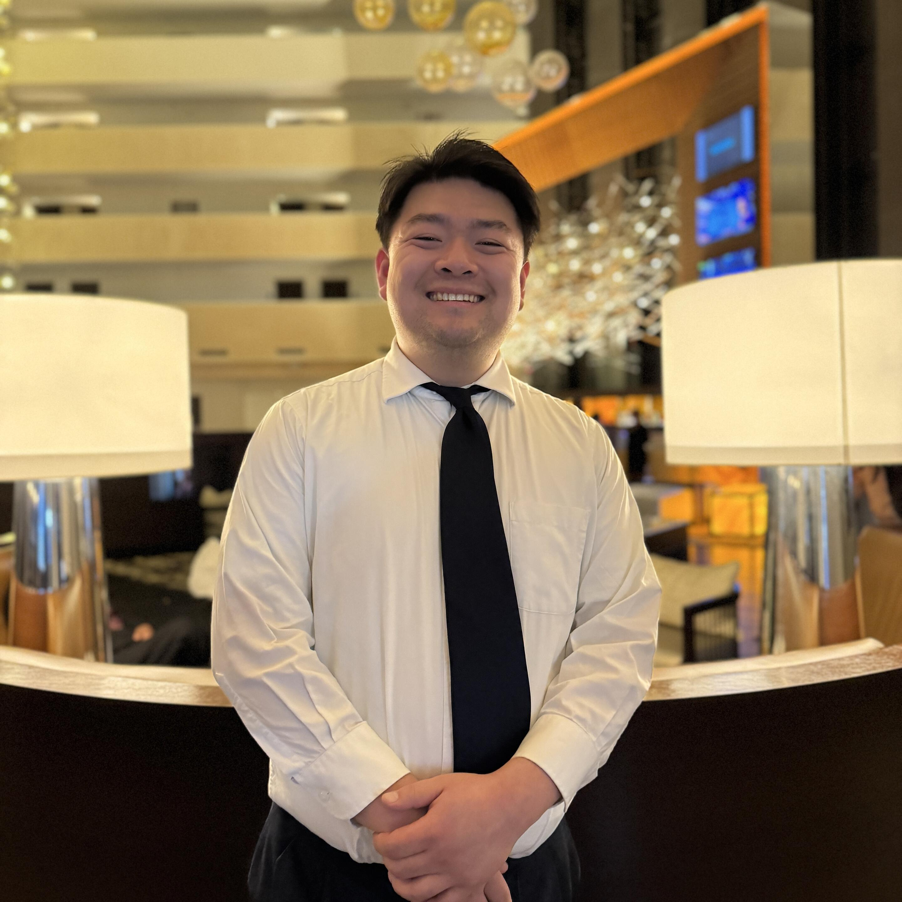
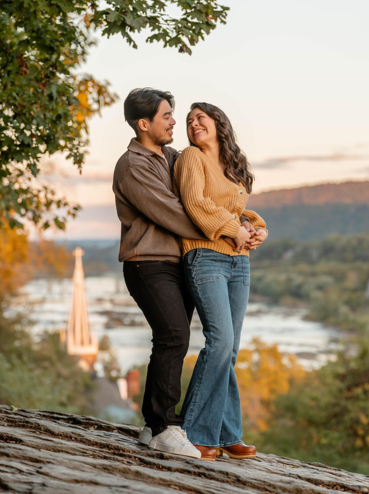

Wedding Party
Bridesmaids

Alejandra
Matron of Honor
Alejandra, also known as Hunji Wunji, is my older sister. I was born after her and she is one of the greatest joys in my life. She is so funny, she is our family comic. When Nick and I were living in NC so that I could attend PA school, we were just 30 minutes away from Ale and her now husband Ian, who at the time was in her residency program. We helped to keep one another sane during those difficult years. Within those years many memories were made and I am so grateful. Growing up, Ale was also the peace keeper between Claudia and I. She played nicely with me and also was Claudia’s second hand. I have always looked up to Ale. She graduated from VT, was on the Rescue Squad and worked all throughout college, attended medical school and served as the chief resident, which is a huge accomplishment! Ale has always been the sporty sister. Growing up, wearing shorts and sneakers with any dress. She has played soccer all her life and dabbled in other sports like basketball too. She lives in NC with her husband Ian, and their fur babies Bear and Benji.

Faviola
Bridesmaid
My oldest sister, Favi, has always been both an incredible sister, but also an incredible second mom to me. She is wonderful in every way, always putting others before herself. Favi has lived through many different life experiences. She graduated from UVA as a biomedical engineer on a full scholarship, lived in Guatemala for 2 years while volunteering in the Peace Corps, she worked as the assistant to the DC mayor, she volunteered at a Free Clinic and on the Ambulance, got her real estate license to help my parents buy a home, and went to Duke for PA school, the #1 PA school in the country. Throughout out all of this she still managed the time to help the other sisters and I in school or attending school field trips. The list goes on and on. So many memories made and counting. I remember Favi learning to drive stick shift, our brother teaching her in the passenger seat and Claudia, Ale and I in the back. On our way to get Baskin Robins, Favi made the car bump up and down all the way down the road. Or the time she hosted the other sisters and I for a few days at her apartment while she was in college. We even tagged along with her when she went out with friends. She was our mama duck and we were her ducklings. Favi lives with her husband Dante, and their precious children Priscila, Jordi, and Laila.

Claudia
Bridesmaid
Growing up Claudia and I were typical sisters, not always getting along. As her youngest sister, I found all types of ways to get under her skin. As we got older we learned to get along and now we are closer than ever. Claudia lived in Miami for many years. Although she and her now husband, Pepi, went to high school together, they didn’t actually get to know one another until they got together in Miami! They eventually moved to Colorado where they lived for many years. Claudia loves music festivals and is a beast in the kitchen. Anything she makes is guaranteed to be delicious. Claudia is queen of adventures, always looking for tickets for the next big trip. She is also the first in our family to take to the slopes skiing! Claudia and Pepi, welcomed their baby Remy who is just the cutest little boy. She is also a mommy to their fur babies Charlie, Binx, and Muffin. Their big happy family just moved back to our hometown from Colorado and I am so excited to have them so close by!

Cadence
Bridesmaid
I met cadence at the tail end of seventh grade. She was new to Arlington from sunny California! We became friends fairly quickly. A core memory I have early on in our friendship is when I went over to her house and we watched Avatar The Last Airbender over a bowl of Mac N Cheese and pink lemonade. The rest was history. Countless sleepovers, hang outs, my secret keeper, our friendship has surpassed the test of time. We bonded over our many boy crushes and shared many goofy moments in her basement. Cadence currently lives with her fiancé Josh, and their precious kitty cat Lucy. I recently visited her in Boston this past winter, where we watched the premier of the Avatar live action remake over homemade casserole and a glass of lemonade, just like old times. I love you Cadycat, my forever friend.

Carolina
Bridesmaid
Carolina and I became fast friends during our time in PA school. I met her on the first day of school and the rest was history. We bonded over many things as we have so much in common. We shared secrets and vulnerable moments with one another. Other than Nick, she was my confidant. Specials moments over countless dinners, study sessions, movie nights, and hangouts I will also keep close to my heart. Carolina is a one of a kind friend! She not only is intelligent and witty with her quick responses and sense of humor, she has many talents too. She speaks five languages, is active with volleyball, tennis and pickle ball. Since graduating PA school, she has moved back to San Francisco where she is working as a Cardiothoracic Surgery PA. I am grateful I get to call her my friend.

Jen
Bridesmaid
I don’t remember meeting Jen. It feels as though I have always known her. She is my sister from another mister. She has been dating Aaron, Nicko’s cousin, for as long as I can remember. Having her around during Patron family gatherings/vacations/reunions is a guarantee that 1. No one is safe from her roasts….and I mean no one. and 2. The night will be full of laughter and great fun. We have also had an unsaid understanding of the struggle/challenges we have both faced while we each were attending our respective challenging post-grad programs to further our careers. Jen used to work as a bedside nurse in the ICU but is now a CRNA. She just graduated in December 2024 and I couldn’t be prouder of her and all her accomplishments! She and Aaron are great doggy parents to their little Chihuahua, Tita Ruth, the goofiest diva.
Groomsmen

Mohmeet
Co-Best Man
Mohmeet is my best friend. I’ve known him for just about 20 years. We met in elementary school, but our friendship really took off at Mohmeet’s 6th-grade birthday. He and I bonded over a Simpsons arcade game where we disappeared for hours, having the other party guests wonder where we went off to. The rest is history. We have been there for each other through our worst moments and have celebrated one another at our best. He is a true brother, and I owe so much of my success to him.

Jared
Co-Best Man
My little brother, I’ve witnessed his remarkable growth into the incredible young man he is today. Our family’s most gifted member, he’s a singer-songwriter, artist, engineer, and likely possesses many more talents than we fully comprehend. Despite being five years younger than me, our shared mindset and interests have forged an exceptionally close bond between us. We’ve endured numerous challenging situations together, and through it all, our connection has only strengthened. Our bond is unbreakable and will last a lifetime.

Aaron
Groomsman
Aaron is my older cousin, but really, he is my older brother. Growing up, I would follow him everywhere, whether it be to a school he was attending or whatever sport he was playing at the time, like football or basketball. He truly was, and still is, a big inspiration in my life and helped shape who I am today.

Rory
Groomsman
Rory, one of my oldest friends, has been a cherished part of my life. We’ve shared countless memories, from all-nighters playing Rock Band and Guitar Hero to family outings and events. We consider him to be an honorary Patron. Rory’s positivity and optimistic outlook on life are qualities I admire deeply.

James
Groomsman
James and I met in the 9th grade while playing football for Washington-Lee. After high school, we bonded a lot over video games. We’d play late into the night, often yelling and stressed, but it was all in good fun. Within our friend group, he was known as the “angry one,” but only those close to him know that he’s actually an amazing person with a caring heart.

Abraham
Groomsman
I met Abe at Gold’s Gym, where we both used to work back in 2016. Being the only other Asian guy working there, he and I had many similar interests. Through the years, our friendship has become more than just that. From joining our family vacations or family dinners (even the ones I’m unable to attend), to lending a hand to my parents or aunts, he has become a treasured part of my family.
